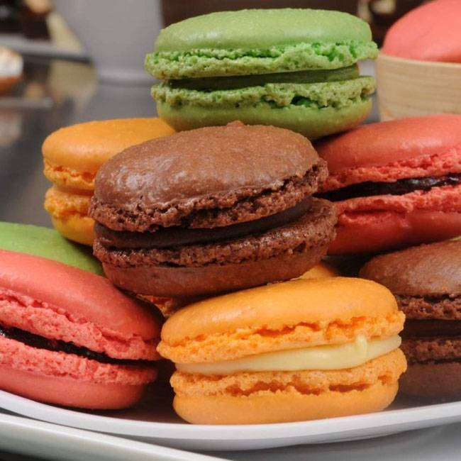

Receitas
Macaron

Ingredientes:
- 36g de açúcar cristal
- 36g de clara de ovo
- 36g de açúcar de confeiteiro
- 42g de farinha de amêndoa
Modo de Preparo:
- Peneire a farinha de amêndoa com o açúcar de confeiteiro duas vezes.
- Bata as claras em neve em velocidade média.
- Coloque metade do açúcar cristal e bata mais um pouco
- Coloque o restante e bata por 8 minutos
- Coloque o corante desejado para dar a cor de seu macaron por mais 1 minuto
- Acrescente a farinha de amêndoa e depois coloque num saquinho plástico
- Faca um pique na ponta do saquinho
- Em uma forma coloque papel-manteiga e faca pequenas bolinhas uma afastada da outra
- Deixe secar por 20 a 30 minutos
- Asse em forno 140°C, cerca de 13 minutos.
- Deixe de 1 a 2 minutos no forno desligado.
- Depois desenforme os disquinhos juntando 2 a 2.
- Recheie com doce de leite ou qualquer outro creme.